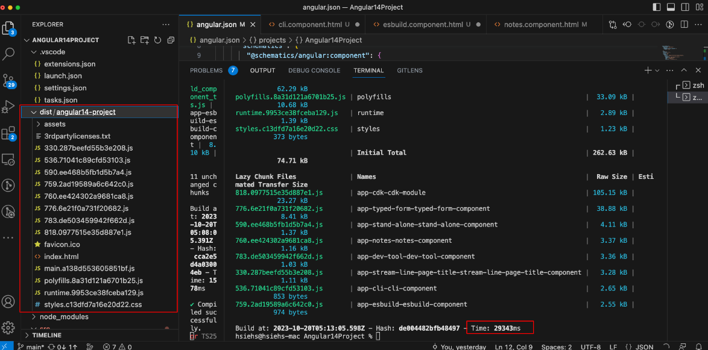
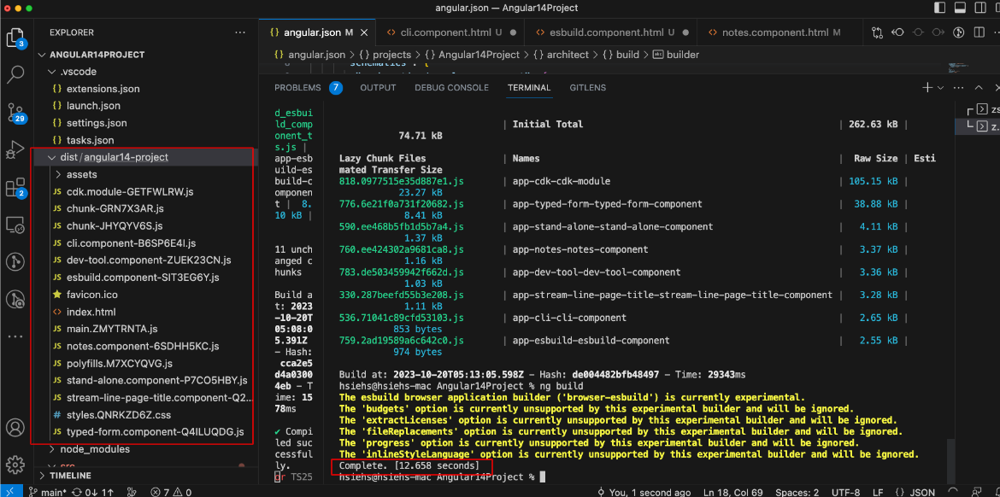

<div class="title">Description</div>
<div class="description-container">
  <div>
     In Angular CDK 14, it supports experimental esbuild-based build system for ng build.
     <a href="https://github.com/evanw/esbuild">esbuild</a>
      is a build tool with the following features.
  </div>
  <ul>
    <li>Extreme speed without needing a cache</li>
    <li>JavaScript, CSS, TypeScript, and JSX built-in</li>
    <li>A straightforward API for CLI, JS, and Go</li>
    <li>Bundles ESM and CommonJS modules</li>
    <li>Tree shaking, minification, and source maps</li>
    <li>Local server, watch mode, and plugins</li>
  </ul>
</div>

<div class="title">Steps</div>

<div class="content-container">
  <pre>
    <code [innerHTML]="steps"></code>
  </pre>
</div>

<div class="title">ng build</div>
<div class="description-container">
  <ul>
    <li>Time: 29343ms</li>
  </ul>
</div>
<div class="demo-container">
        
</div>

<div class="title">ng build - esbuild</div>
<div class="description-container">
  <ul>
    <li>Time: 12658ms</li>
  </ul>
</div>
<div class="demo-container">
        
</div>